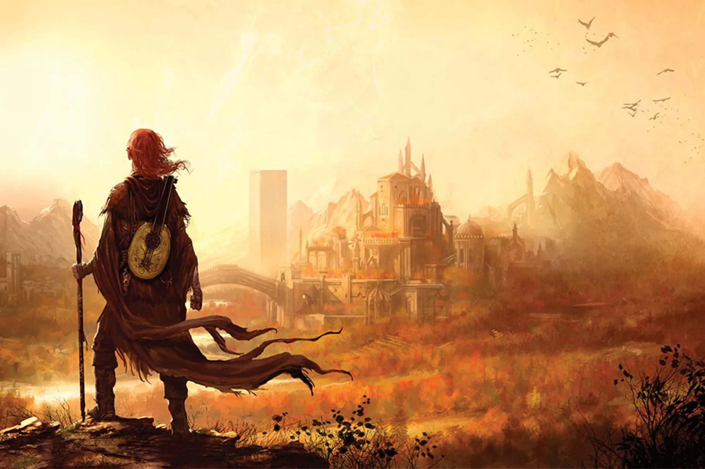
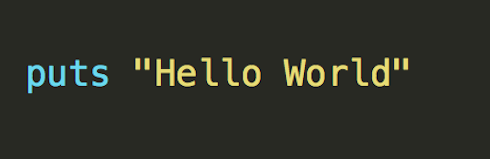
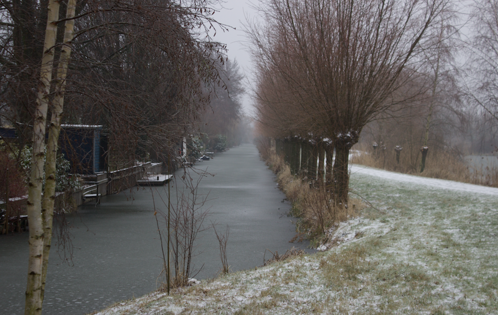
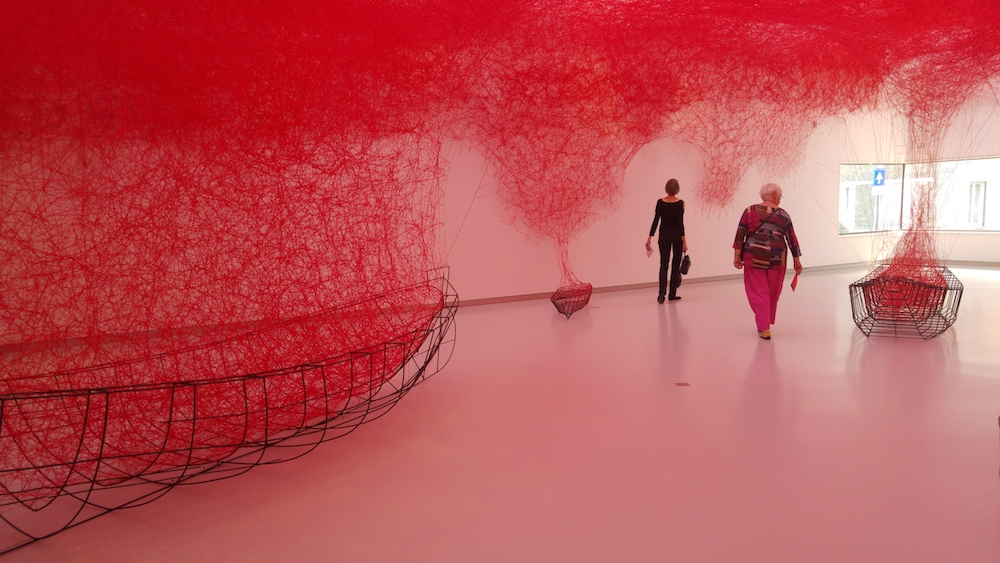

Roan Mertens
Student @ Le Wagon & Aspiring Programmer
It took me four years to figure out I didn't really like teaching. It also took me a week to figure out I really liked programming. My tip for others: Work is a big part of life. Try to do something you like!
My Interests
|  |
ReadingIt has been one of my most favorite pasttimes sindse I was a litle kid. But unfortunately I am pretty much a one dimentional reader. The books i've read have mostly consisted of sci-fy and fantasy books. I'm trying to broaden my horizon but there are so many good sci-fy and fantasy books that it is quite hard. My favorite book is The Name of the Wind from the writer Patrick Rothfuss. |
|  |
CodingThis is one of my most recent findings. It is something I hadn't thought I would ever do see myself doing. But here I am. Enjoying the Le Wagon bootcamp more than I ever thought possible. Lets see where it lands me in end. |
|  |
TravelingI like to experience different cultures. I have traveled in Europe, North America, Afrika and Asia. The reason I moved from my homecountry The Netherlands to London is mainly because I want to experience different and new things and broaden my perspective. The next step is to move to Japan for at least a year. |
|  |
ArtOne of the things that have been prevalent in my life is Art. I loved and still love drawing and making stuff. Art works, installations and things that make you think and observe are what makes me get out of bed in the morning. |
 |
FoodWhat I like about food is the making and the eating. Finding new recipes and changing them to my liking. Standing in the kitchen and just making something. Going to new restaurants to try out food or going to that old restaurant to eat that one thing that I was craving for the past couple of days. |
About this page
This page has been coded during the first front end exerise of the fullstack program of Le Wagon.